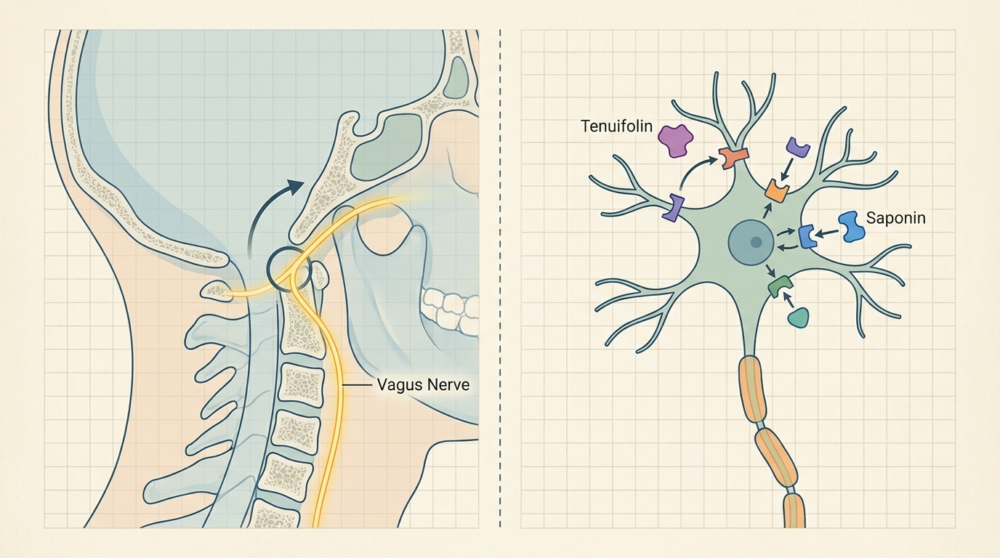

Waking from Shallow Sleep with a Pounding Heart: The Structural and Herbal Integrative Treatment Principles of Autonomic Insomnia Caused by Craniocervical Junction Imbalance
Structural misalignment of the craniocervical junction imposes mechanical compression on the vagus nerve and adjacent upper cervical neurovascular structures near the jugular foramen, reducing vagal tone and impairing baroreflex sensitivity. This acts as a structural cause that suppresses slow-wave sleep generation in brainstem sleep-regulating nuclei and provokes nocturnal palpitation through sympathovagal imbalance, and an academically discussed integrative approach combines neural decompression with neurotransmitter-modulating herbal medicine.
1. Neurophysiological Correlation Between Upper Cervical Spinal Misalignment and Autonomic Nervous System Dysregulation with Chronic Insomnia
The craniocervical junction, where the skull meets the first and second cervical vertebrae, represents the spinal segment in closest physical proximity to the brainstem and medulla oblongata. Chronic biomechanical misalignment at this junction extends beyond simple neck pain to exert structural influence across the entire autonomic nervous system regulatory center. An anatomical passage exists near the craniocervical junction through which the vagus nerve exits the cranial cavity via the jugular foramen, and chronic fascial tension and joint displacement in this region can impose sustained mechanical compression on vagal nerve fibers. As the principal pathway of parasympathetic activation across the heart, lungs, and digestive system, reduced vagal tone leads to a chronic state of autonomic imbalance in which the sympathetic nervous system assumes relative dominance.
This state of sympathetic hyperactivity disrupts the normal neurotransmission rhythm of the sleep-regulating nuclei located in the brainstem, acting to suppress the generation of slow-wave sleep, the deep sleep stage predominated by delta wave activity in the cerebral cortex. Slow-wave sleep plays a pivotal role in physical restoration and memory consolidation; when autonomic imbalance persists, entry into this stage is itself impaired, resulting in a clinical pattern of recurrent shallow sleep and increased frequency of nocturnal arousal. Furthermore, sympathovagal imbalance is frequently accompanied by reduced heart rate variability alongside nocturnal palpitation, a presentation that corresponds closely to the pattern termed heart-mind disturbance insomnia in Korean medicine. This is precisely why biomechanical abnormality of the craniocervical junction is identified as an upstream structural cause of autonomic nervous system dysregulation and chronic insomnia.
2. Combined Treatment Mechanism for Stellate Ganglion Decompression and Modulation of Inhibitory Cerebral Neurotransmitters

The upper cervical region near the craniocervical junction houses the stellate ganglion and its adjacent sympathetic chain, such that chronic misalignment at this segment can be connected to compression of surrounding tissue and reduced microvascular perfusion around the stellate ganglion. As the ganglion where sympathetic fibers directed toward the head, neck, and upper extremities converge, tension relief in this region is understood as a structural nexus contributing not only to improved local blood flow but also to the stabilization of higher-order autonomic reflex circuits overall. Biomechanical Spatial Spinal Decompression Chuna Therapy (SART Protocol) is based on the principle of applying precise traction force and spatial clearance to the craniocervical junction and upper cervical segments, thereby alleviating mechanical load imposed on neurovascular structures, which may act in a direction that restores peripheral vagal signal transmission pathways and improves brainstem and cerebral microcirculation.
However, it is clinically discussed that structural decompression alone may not be sufficient to fully resolve chronic central hyperarousal states or reduced serotonergic neurotransmission function. At this juncture, the neuropharmacological approach of hGMP-Standard Tailored Korean Herbal Medicine centered on Tian Wang Bu Xin Dan performs a complementary role. Tenuifolin derived from Polygala tenuifolia, together with saponin components from Platycladus orientalis and Ziziphus jujuba, is reported to potentiate 5-HT receptor signaling and GABA-A receptor-mediated inhibitory neurotransmission, acting in a direction that extends slow-wave sleep duration and calms hyperarousal states at the central nervous system level. The cerebral perfusion substrate and peripheral vagal signaling pathway secured through structural decompression may function as a physiological prerequisite for these herbal active constituents to reach the central nervous system efficiently, and the theoretical rationale of this integrative protocol is that when the two approaches act complementarily, they may approach the shared goal of slow-wave sleep restoration and palpitation-associated insomnia relief. Reviewing Bodyall Korean Medicine Clinic’s accumulated clinical experience in autonomic nerve regulation and chronic insomnia management, a trend has been reported in which case groups receiving concurrent craniocervical junction alignment correction and inhibitory neurotransmission-modulating herbal medicine show a comparatively pronounced pattern of sympathetic tension relief and improved heart rate variability (HRV). The biomechanical mechanism underlying vagal tone restoration and normalization of baroreflex sensitivity is explained through the cited academic study[1], and based on this objective mechanism, Bodyall Korean Medicine Clinic applies Biomechanical Spatial Spinal Decompression Chuna Therapy (SART Protocol) together with the Autonomic Herbal Protocol as a systematic combined protocol in clinical practice.
| Category | Conventional Hypnotics and Sedative-Anxiolytic Agents | Combined Biomechanical Spatial Spinal Decompression Chuna Therapy (SART Protocol) and hGMP-Standard Tailored Korean Herbal Medicine |
|---|---|---|
| Scope of Action | Pharmacological action confined to inhibitory receptors in the central nervous system | Combined approach of craniocervical junction structural correction and central neurotransmitter modulation |
| Vagal Tone | No direct improvement mechanism | Aimed at reducing vagal nerve compression and restoring tone through upper cervical decompression |
| Slow-Wave Sleep Approach | Sedation-centered sleep induction | Aimed at combined slow-wave sleep extension through brainstem microcirculation improvement and GABA-A receptor modulation |
| Response to Palpitation-Associated Insomnia | Insufficient direct response to cardiac symptoms | Approach of alleviating palpitation through restoration of sympathovagal balance |
| Constitutional Tailoring | Individual constitutional specificity not reflected | Individualized precision adjustment through hGMP-Standard Tailored Korean Herbal Medicine |
3. Academic Clinical Study Analysis on Vagal Tone Reduction and the Pathological Mechanism of Slow-Wave Sleep Disturbance and Palpitation-Associated Insomnia Following Craniocervical Junction Biomechanical Misalignment
A randomized cross-over preliminary study examining the effects of spinal manipulative therapy on the upper and lower cervical spine upon blood pressure and heart rate variability reported that manipulation at the upper cervical spine and craniocervical junction is closely linked to autonomic nervous system regulatory indices. This is interpreted as biomechanical evidence supporting the premise that Biomechanical Spatial Spinal Decompression Chuna Therapy (SART Protocol) may relieve mechanical compression imposed on the vagus nerve and adjacent upper cervical neurovascular structures passing near the jugular foramen, thereby normalizing vagal tone and baroreflex sensitivity and improving brainstem and cerebral microcirculation, which may in turn attenuate chronic sympathetic hyperactivity. It is suggested that this restoration of autonomic balance through structural correction may serve as an upstream mechanism alleviating suppression of slow-wave sleep generation in brainstem sleep-regulating nuclei and nocturnal palpitation attributable to sympathovagal imbalance. However, as this study is a preliminary investigation with limited sample size, it should be understood as an academic reference requiring further large-scale validation.[1]
Meanwhile, a systematic review and meta-analysis synthesizing 14 randomized controlled trials involving 1,256 participants reported that Tian Wang Bu Xin Dan demonstrated significant improvement in effective rate and Pittsburgh Sleep Quality Index scores for insomnia treatment. This is interpreted as a result consistent with the pharmacological mechanism of hGMP-Standard Tailored Korean Herbal Medicine, whereby tenuifolin derived from Polygala tenuifolia together with saponin components from Platycladus orientalis and Ziziphus jujuba potentiates 5-HT receptor signaling and GABA-A receptor-mediated inhibitory neurotransmission, directly extending slow-wave sleep duration while stabilizing hypothalamic-pituitary-adrenal axis output to alleviate palpitation-associated insomnia patterns. However, the original study explicitly notes that methodological limitations necessitate further large-scale rigorously designed research going forward, and this description is likewise premised on such academic caution.[2]
Synthesizing both studies, it can be academically discussed that the peripheral vagal signal transmission pathway and cerebral perfusion substrate secured through structural decompression of the craniocervical junction may function as a physiological prerequisite for the active constituents of Tian Wang Bu Xin Dan, which modulate serotonergic and GABAergic systems, to achieve optimal bioavailability within the central nervous system. Simultaneously, the neuropharmacological action of herbal constituents may perform a role of compensating for persistent central hyperarousal and serotonergic deficiency states that structural correction alone cannot reach, presenting a theoretical framework in which the concurrent application of both approaches forms a complementary causal relationship with respect to slow-wave sleep disturbance and palpitation-associated insomnia.
4. Bodyall’s Biomechanical Spatial Spinal Decompression Chuna Therapy (SART Protocol) and Autonomic Herbal Protocol
Bodyall Korean Medicine Clinic’s Biomechanical Spatial Spinal Decompression Chuna Therapy (SART Protocol) combined with the Autonomic Herbal Protocol constitutes an integrative approach beginning with assessment of craniocervical junction alignment, followed by precision decompression treatment of upper cervical segments in conjunction with hGMP-Standard Tailored Korean Herbal Medicine prescription. After comprehensively evaluating each patient’s craniocervical junction alignment status and autonomic indices such as heart rate variability, a clinical approach combining precision decompression Chuna aimed at relieving vagal nerve compression together with constitutionally tailored herbal medicine based on Tian Wang Bu Xin Dan principles is applied in practice. This integrative protocol is designed based on the objective mechanism whereby the two pillars of vagal tone restoration through neural decompression and inhibitory neurotransmission modulation through herbal active constituents act complementarily to contribute to slow-wave sleep restoration and palpitation-associated insomnia relief. Bodyall Korean Medicine Clinic continues to accumulate clinical data and pursue academic validation in parallel, so that Biomechanical Spatial Spinal Decompression Chuna Therapy (SART Protocol) can establish itself as one safe and effective Korean medicine conservative treatment option.
Structural decompression of the craniocervical junction may contribute to restoring the peripheral signal transmission pathway of the vagus nerve, but it is discussed that this alone is unlikely to fully resolve chronic central hyperarousal states or serotonergic deficiency. Accordingly, the core principle of this integrative protocol is designed so that structural and neuropharmacological approaches act complementarily by concurrently applying herbal active constituents that modulate inhibitory neurotransmission.
References
- Win, et al. (2015), 'Effects of Upper and Lower Cervical Spinal Manipulative Therapy on Blood Pressure and Heart Rate Variability in Volunteers and Patients With Neck Pain: A Randomized Controlled, Cross-Over, Preliminary Study', Journal of Chiropractic Medicine. DOI: 10.1016/j.jcm.2014.12.005
- Yang, et al. (2019), 'Tian Wang Bu Xin Dan for Insomnia: A Systematic Review of Efficacy and Safety', Evidence-Based Complementary and Alternative Medicine. DOI: 10.1155/2019/4260801